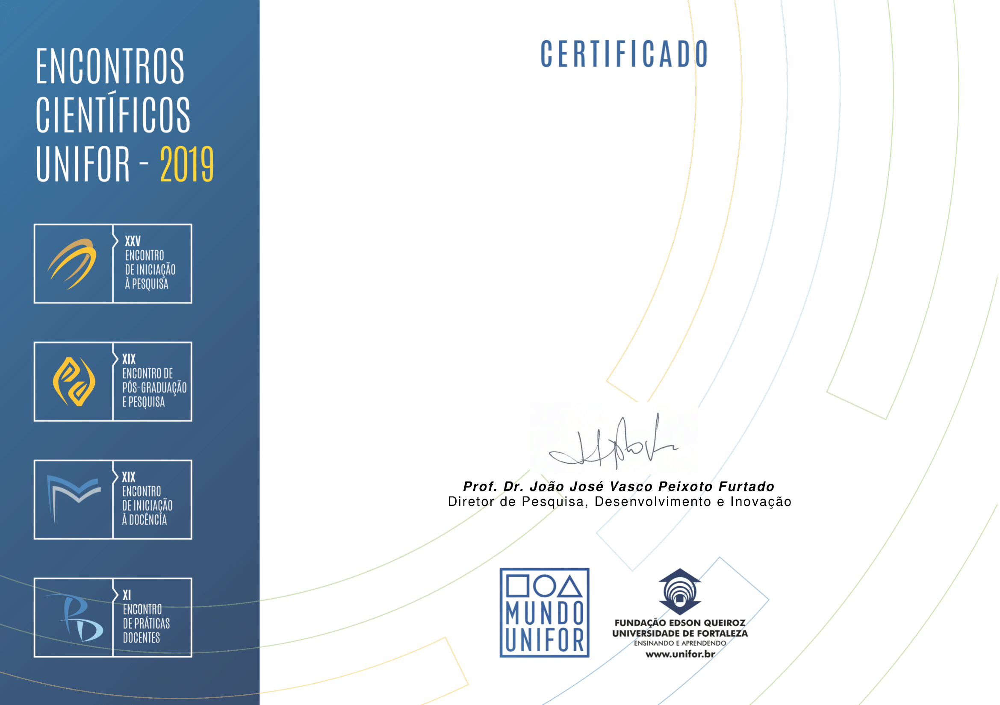

Certificamos que o trabalho "
{{ personObject.Titulo }}," de autoria de
{{ personObject.Nome }},
foi apresentado na Área de {{ personObject.Centro }} do XXV Encontro de Iniciação à Pesquisa da Universidade
de Fortaleza, realizado no período de 16 a 18 de outubro de 2019.
18 de outubro de 2019.